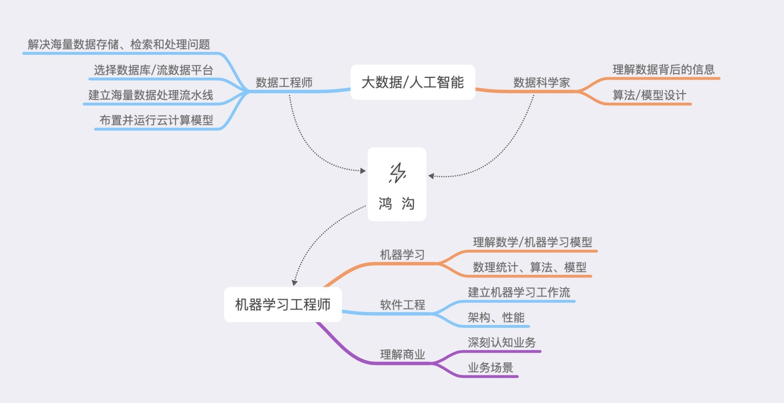

- 00 开篇词 打通修炼机器学习的任督二脉.md
- 01 频率视角下的机器学习.md
- 02 贝叶斯视角下的机器学习.md
- 03 学什么与怎么学.md
- 04 计算学习理论.md
- 05 模型的分类方式.md
- 06 模型的设计准则.md
- 07 模型的验证方法.md
- 08 模型的评估指标.md
- 09 实验设计.md
- 10 特征预处理.md
- 11 基础线性回归：一元与多元.md
- 12 正则化处理：收缩方法与边际化.md
- 13 线性降维：主成分的使用.md
- 14 非线性降维：流形学习.md
- 15 从回归到分类：联系函数与降维.md
- 16 建模非正态分布：广义线性模型.md
- 17 几何角度看分类：支持向量机.md
- 18 从全局到局部：核技巧.md
- 19 非参数化的局部模型：K近邻.md
- 20 基于距离的学习：聚类与度量学习.md
- 21 基函数扩展：属性的非线性化.md
- 22 自适应的基函数：神经网络.md
- 23 层次化的神经网络：深度学习.md
- 24 深度编解码：表示学习.md
- 25 基于特征的区域划分：树模型.md
- 26 集成化处理：Boosting与Bagging.md
- 27 万能模型：梯度提升与随机森林.md
- 28 最简单的概率图：朴素贝叶斯.md
- 29 有向图模型：贝叶斯网络.md
- 30 无向图模型：马尔可夫随机场.md
- 31 建模连续分布：高斯网络.md
- 32 从有限到无限：高斯过程.md
- 33 序列化建模：隐马尔可夫模型.md
- 34 连续序列化模型：线性动态系统.md
- 35 精确推断：变量消除及其拓展.md
- 36 确定近似推断：变分贝叶斯.md
- 37 随机近似推断：MCMC.md
- 38 完备数据下的参数学习：有向图与无向图.md
- 39 隐变量下的参数学习：EM方法与混合模型.md
- 40 结构学习：基于约束与基于评分.md
- 如何成为机器学习工程师？.md
- 总结课 机器学习的模型体系.md
- 总结课 贝叶斯学习的模型体系.md
- 结课 终有一天，你将为今天的付出骄傲.md
如何成为机器学习工程师？
你好，我是王天一。最近很多人都找我聊天，想了解机器学习工程师这个岗位到底需要哪些技能，怎么样才能有更好的发展。正好，那就写一篇加餐吧，把我的一些想法跟你好好聊聊。
说到数据分析师和机器学习工程师这样的新兴职业，你的第一印象是什么呢？数据分析师是不是跟电脑屏幕上汹涌澎湃的曲线大眼瞪小眼？机器学习工程师是不是闭着眼睛对着一堆参数调来调去，抓耳挠腮？其实真相远非如此简单。如果说机器学习的学术研究多多少少还带着点儿玄学色彩的话，它在商业领域中的应用就要踏实得多，因为没有哪个公司的老板会容忍自己的钱扔进水里，连个响儿都听不见的。
随着大数据技术与人工智能技术的普及，越来越多的企业开始以它们为驱动力来助推商业表现，像推荐系统和风控系统就是数据分析在商业领域的经典应用。这样的新趋势也催生了一系列相关的新岗位，比如数据科学家、数据工程师、机器学习工程师等等。这些岗位在数据分析管理的任务上分工协作，其内涵既有一定的重合，又有明显的区别。今天，我们就来聊一聊这些岗位。
本质上讲，大数据也好，机器学习也好，人工智能也好，在商业领域中的作用都是建立数据驱动的自动化决策过程。传统的商业分析大多建立在通过问卷调查形式所取得的用户反馈或是较长时间段内的汇总数据的基础上。但在互联网空前普及的今天，海量实时的多维度数据已经成为对用户行为更加真实和迅速的反映，如何从数据中提取出有价值的信息，进而形成准确的决策，就成为了数据分析团队或者人工智能团队的核心任务。
这些岗位在不同的企业可能会有不同的职责，但一般来说，科学家和工程师的本质区别在于前者侧重理论而后者侧重应用，一个顶天一个立地。这样的区别也反映在岗位职责的差异上。
数据科学家
数据科学家的任务是理解数据背后的信息，并利用来源于数学、物理和统计学分析工具将信息定量提取，而从数据到信息的转换就需要通过数据挖掘或者机器学习中的各种模型来实现。比如推荐系统就是根据用户过往的观看或购买记录来推荐他可能感兴趣的产品，而设计的推荐方法，比如现有的基于用户或者基于物品或者协同过滤，就是数据科学家的工作。
数据工程师
数据工程师则需要解决海量数据的存储、检索和处理问题，选择合适的关系/非关系数据库和流数据平台，建立海量数据处理的流水线，将分布式的存储和运算系统部署并运行等等。科学家的算法设计需要大规模的数据支撑，包括用户的浏览记录、每次浏览的时长等等。要对这海量数据进行高效的存储和调用，就是数据工程师的工作了。
机器学习工程师
不难看出，数据科学家和数据工程师之间无论在知识上还是技能上都存在着不小的鸿沟，而机器学习工程师正是两者之间过渡的桥梁。
他要能够理解和掌握科学家设计的数学模型（以及常见的机器学习模型）的基本原理，利用现有的机器学习框架和库或者更加底层的语言实现原型模型，并对模型进行参数的调优和并行化、可扩展性等方面的优化。
同时，他也要明确机器学习模块在整个软件系统中的地位，建立机器学习工作流，管理数据在数据库和机器学习平台之间的流动，优化与维护模型在分布式系统上的性能，构造合适的接口以供他人调用。在推荐系统的例子里，他的任务就是把科学家设计的推荐算法部署到机器学习的流水线上，这中间会涉及数据预处理、训练集/测试集划分、模型训练等复杂的步骤。
但在眼下，出于成本和易用性的考虑，大部分企业使用的都是由微软、谷歌或者亚马逊所开发的主流机器学习平台，这就使得机器学习工程师的工作量就下降了许多。
简而言之，机器学习工程师要做的就是将机器学习模型工程化、产品化，并保证机器学习产品的可用性。正所谓人如其名：这个岗位同时需要机器学习和软件工程两项必备的基本技能。以上的两个方向也是这个行业深耕的方向。向理论方向靠拢的话，可以进一步深入学习数理统计知识和算法理论，理解算法和模型背后的矢量化概率化思想，以从事算法的设计工作，也就是向算法工程师发展；向实践方向靠拢的话，则可以考虑机器学习平台的整体架构，在实践中不断总结提高，乃至开发出一套全新的机器学习平台。
如果想要在此基础上继续提升自己的段位的话，对业务的深刻认知绝对是不可或缺的。机器学习也好，数据分析也好，归根结底都是为业务的提升服务的。技术指标不等于商业指标，如果不能深入地理解业务，再好的模型也是纸上谈兵。待优化的指标是什么，关键属性有哪些，如何合理地评价模型，这些都不是纯粹的技术问题，需要在业务场景下具体情况具体分析。
举个例子，现在很多人都在炒股，从技术角度来说，建立一个时间序列模型，根据过去一段时间的股指来预测明天的股指并不是什么难事。可问题在于这样的预测并不是建立在经济形势与股市逻辑的基础上，只是对数据的摆弄，也就难免产生严重的过拟合倾向。在商业应用中，技术只是手段，商业才是目的。脱离了业务的机器学习必然是无源之水，无本之木，这是技术人员一定要注意的问题。
总而言之，机器学习工程师的任务就是让模型在服务器上无障碍地跑起来。当然，某些企业可能会增加任务，将算法或者模型的设计也纳入这个岗位的职责之中，不同岗位之间的差异正在变得模糊。这样的要求也不难理解，俗话说得好，好媳妇儿要上得厅堂下得厨房，好的机器学习工程师自然也应该推得出公式、找得到Bug、调得准参数、做得好PPT，将科学家的头脑和工程师的身手完美融合。虽然这样的全面型人才基本上只存在于想象之中，却也给我们确定了一个努力的方向，你说呢？

© 2019 - 2023 Liangliang Lee. Powered by gin and hexo-theme-book.